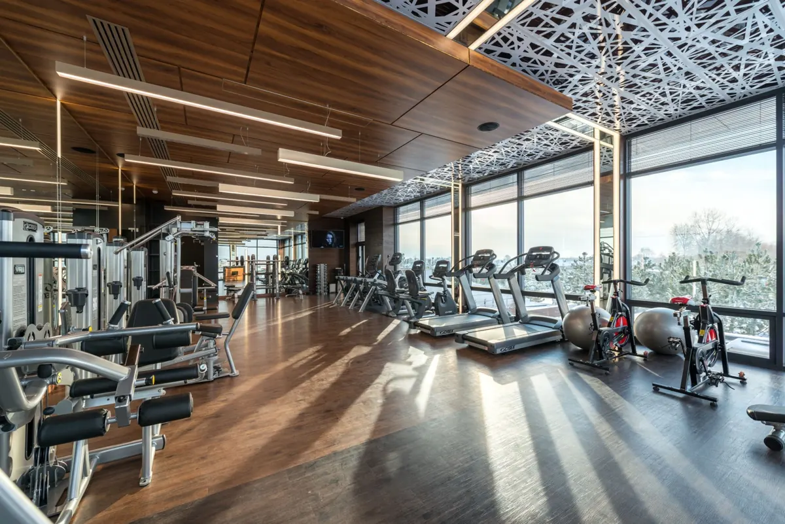
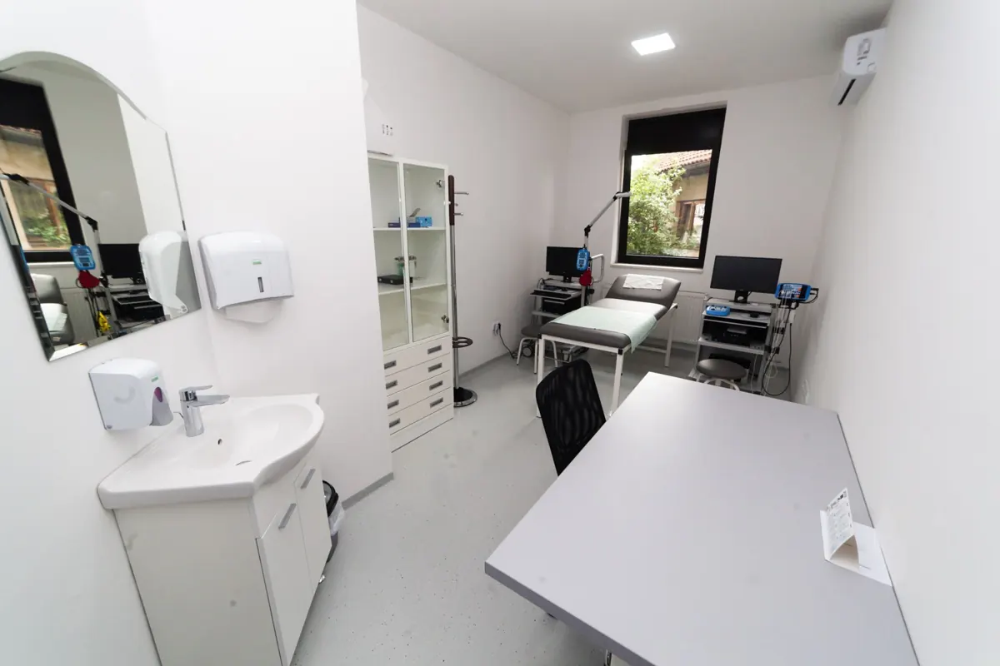
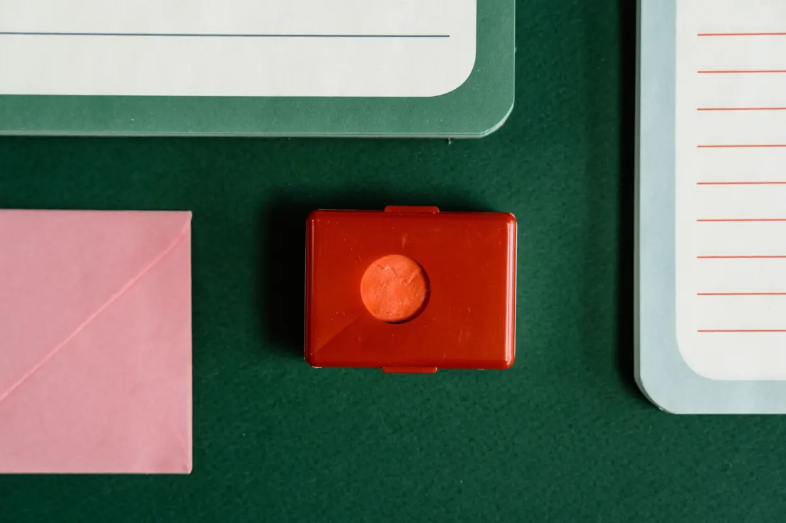
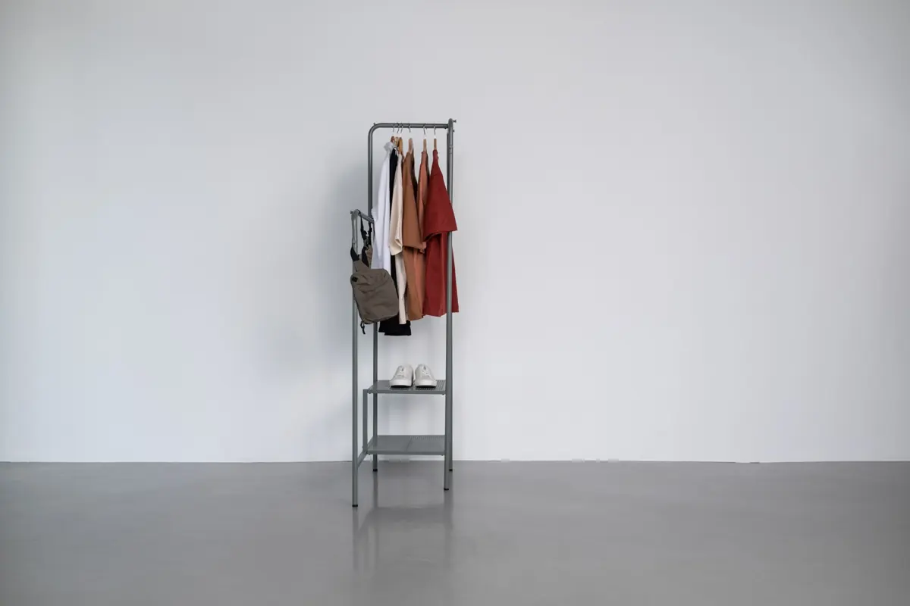
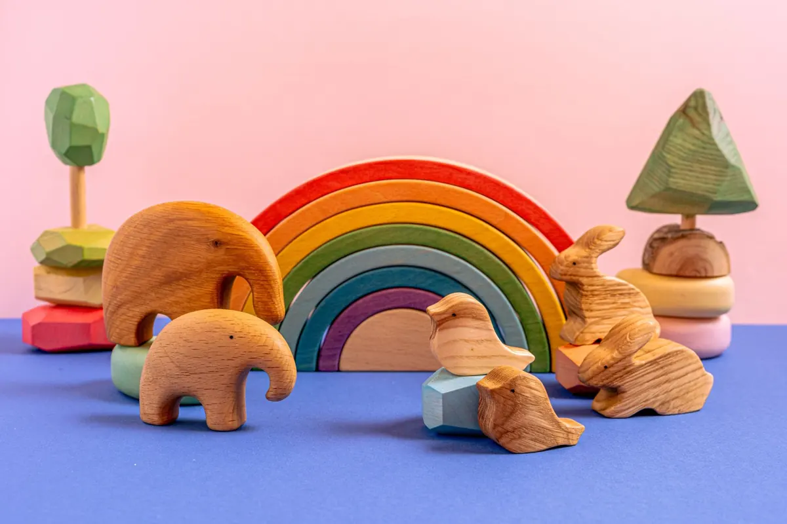

تصفّح الواجهة
افتح النموذج وشاهد تنظيم الصفحات وطريقة عرض الخدمات.
CHAHOS AGENCY / ORIGINAL CONCEPTS
تصفّح ثمانية نماذج تفاعلية لتتخيّل كيف يمكن أن يظهر موقعك. جميعها أمثلة تصميم وتجارب توضيحية وليست مشاريع تمّ تسليمها لزبائن.
01 / نماذج تصميم المواقع

النوادي الرياضية ↗اشتراكات، حصص وجداول التدريب
العيادات ↗تعريف بالخدمات وطلب المواعيدالمقاولات والهندسة ↗معرض مشاريع ونموذج استفسار
استوديوهات التصميم ↗عرض الخدمات وطلبات المشاريع
متاجر الأزياء ↗تصفّح المنتجات وخيارات الطلبالصيدليات ↗كتالوج منتجات وطلبات الاستفسارالمطاعم ↗قوائم الطعام وتجربة اختيار الطلبات
الهدايا والألعاب ↗تصفّح الفئات واختيار الهدايا02 / كيف تستفيد من هذه النماذج؟
افتح النموذج وشاهد تنظيم الصفحات وطريقة عرض الخدمات.
اختر ما يحتاجه عملك فعلياً، مثل الحجوزات أو الاستفسارات أو المنتجات.
نحضّر نطاق العمل والخطوات والسعر وفق التفاصيل التي تزوّدنا بها.
النموذج نقطة بداية؛ التصميم النهائي يُبنى لاحتياجات عملك وهويتك.
اعرض علينا الفكرة، ومنحدّد سوا التفاصيل والخطوة التالية.
ابدأ مشروعك ↗ · العودة إلى الرئيسية ↗